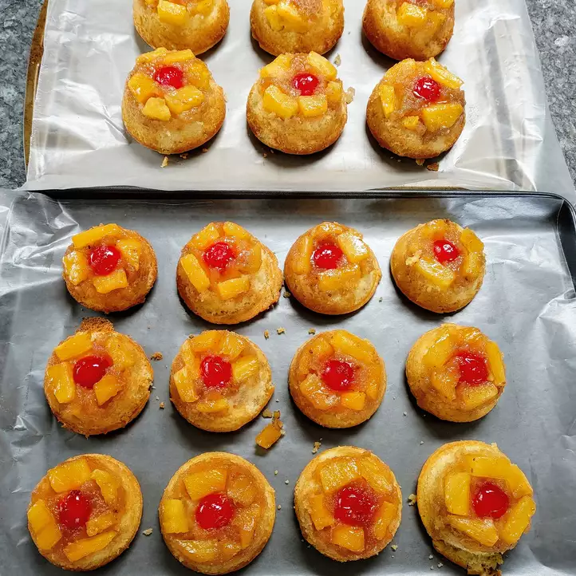

The best cup cake from chef Ak aryan
Love to make these little guys for family gatherings or just as treats for home to pack into lunches. Easy recipe to make. Adaptations can be made to make this completely from scratch. This is just a yummy simplified version!
Purported to make you feel like "having your brains smashed out by a slice of pineapplecpcake wrapped round a large gold brick".
Ingredients
- cooking spray
- cooking spray
- 24 maraschino cherries
- 1 (20 ounce) can crushed pineapple
- 1 (18.25 ounce) package pineapple cake mix (such as Duncan Hines® Pineapple Supreme)
- 3 eggs
Recipe instructions
- Move an oven rack into the middle of the oven. Preheat oven to 350 degrees F (175 degrees C).
- Spray 24 muffin cups with cooking spray.
- Line a work surface with waxed paper.
- Spoon 1 teaspoon melted butter into the bottom of each sprayed muffin cup.
- Spoon 1 tablespoon brown sugar in each muffin cup.
- Press a maraschino cherry into the center of the brown sugar in each muffin cup.
- Spoon a heaping tablespoon of crushed pineapple over the cherry and compact it with the back of a spoon into an even layer.
- Mix pineapple cake mix, eggs, pineapple juice, and vegetable oil in a large bowl with electric mixer on low speed until moistened, about 30 seconds. Turn mixer speed to medium and mix for 2 minutes.
- Pour pineapple cake batter into the muffin cups, filling them to the top; do not overfill.
- Bake in the preheated oven until a toothpick inserted into the center of a cupcake comes out clean, about 20 minutes.
- Allow cupcakes to cool at least 5 minutes before inverting muffin cups onto the waxed paper to release. Serve with pineapple and cherry sides up. Sprinkle cupcakes lightly with confectioners' sugar.
Return to top
Return to main page